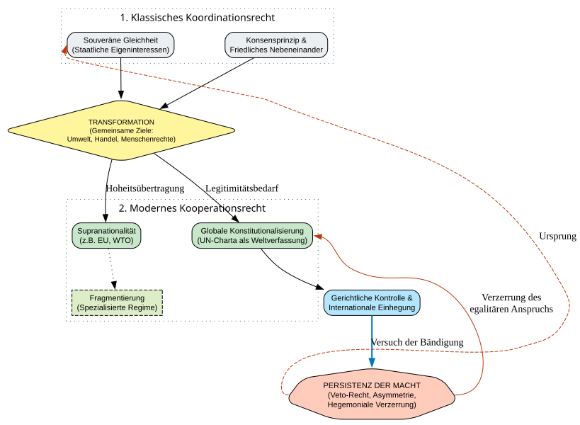

Code
from graphviz import Digraph
from IPython.display import display
def create_voelkerrecht_evolution_graph():
dot = Digraph('Voelkerrecht_Wandel', comment='Vom Koordinations- zum Kooperationsrecht')
# Globales Styling
dot.attr(rankdir='TB', size='12,12', nodesep='1.0', ranksep='0.8')
dot.attr('node', shape='rect', style='filled, rounded', fontname='Arial', fontsize='11')
# --- EBENE 1: Klassisches Koordinationsrecht ---
with dot.subgraph(name='cluster_koordination') as c:
c.attr(label='1. Klassisches Koordinationsrecht', style='dotted', fontname='Arial-Bold', color='#546E7A')
c.node('SOUV', 'Souveräne Gleichheit\n(Staatliche Eigeninteressen)', fillcolor='#ECEFF1')
c.node('KONS', 'Konsensprinzip &\nFriedliches Nebeneinander', fillcolor='#ECEFF1')
# --- EBENE 2: Die Transformations-Treiber ---
dot.node('TRANS', 'TRANSFORMATION\n(Gemeinsame Ziele:\nUmwelt, Handel, Menschenrechte)',
shape='diamond', fillcolor='#FFF59D', fontsize='10')
# --- EBENE 3: Modernes Kooperationsrecht ---
with dot.subgraph(name='cluster_kooperation') as c:
c.attr(label='2. Modernes Kooperationsrecht', style='dotted', fontname='Arial-Bold', color='#2E7D32')
c.node('SUPRA', 'Supranationalität\n(z.B. EU, WTO)', fillcolor='#C8E6C9')
c.node('KONST', 'Globale Konstitutionalisierung\n(UN-Charta als Weltverfassung)', fillcolor='#C8E6C9')
c.node('FRAG', 'Fragmentierung\n(Spezialisierte Regime)', fillcolor='#DCEDC8', style='filled, dashed')
# --- VERBINDUNGEN (Der vertikale Fluss) ---
dot.edge('SOUV', 'TRANS')
dot.edge('KONS', 'TRANS')
dot.edge('TRANS', 'SUPRA', label='Hoheitsübertragung')
dot.edge('TRANS', 'KONST', label='Legitimitätsbedarf')
dot.edge('SUPRA', 'FRAG', style='dotted')
# --- DAS MACHT-ELEMENT (Der gewünschte Außenpfeil) ---
# Hier nutzen wir constraint='false', um die Machtasymmetrie
# links um die gesamte Entwicklung herumzuführen.
dot.node('MACHT', 'PERSISTENZ DER MACHT\n(Veto-Recht, Asymmetrie,\nHegemoniale Verzerrung)',
fillcolor='#FFCCBC', shape='septagon')
# Pfeil, der von der Macht-Ebene oben (Koordination) zur Einhegung unten führt
dot.edge('MACHT:w', 'SOUV:w', constraint='false', color='#BF360C', style='dashed', label=' Ursprung')
dot.edge('MACHT:e', 'KONST:e', constraint='false', color='#BF360C', label=' Verzerrung des\negalitären Anspruchs')
# Einhegungspfeil (Gerichte/Recht binden Macht)
dot.node('JUD', 'Gerichtliche Kontrolle &\nInternationale Einhegung', fillcolor='#B3E5FC')
dot.edge('KONST', 'JUD')
dot.edge('JUD', 'MACHT', label='Versuch der Bändigung', color='#0277BD', style='bold')
return dot
# Visualisierung anzeigen
graph = create_voelkerrecht_evolution_graph()
display(graph)